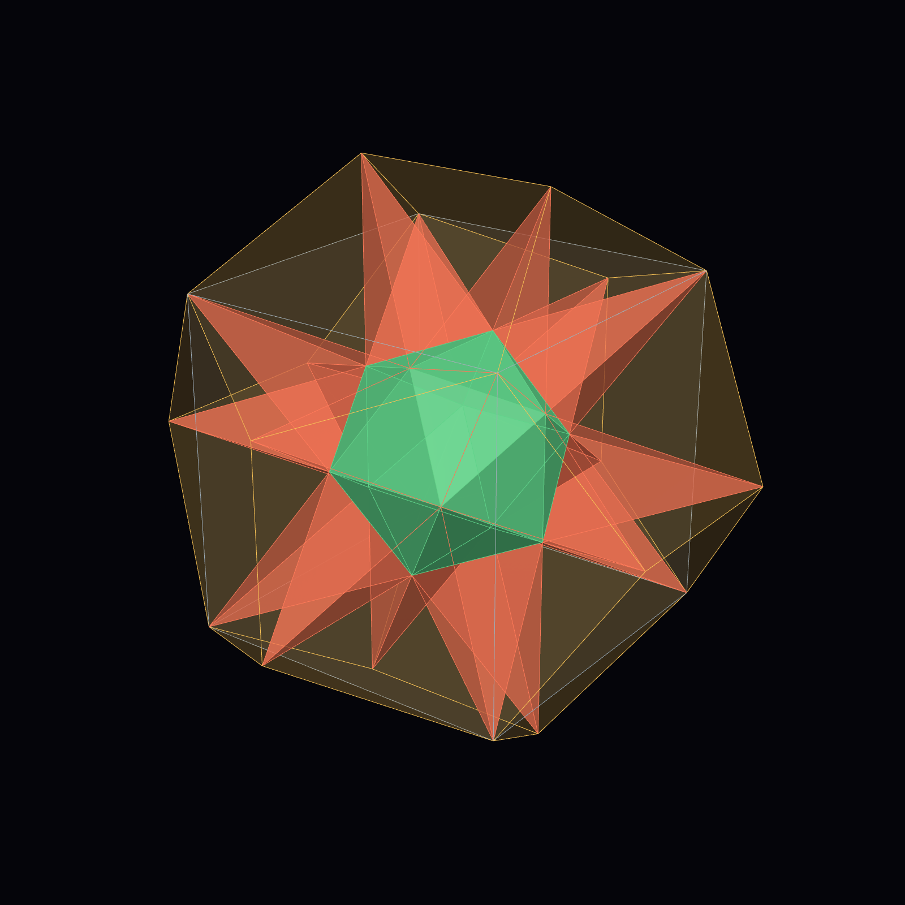
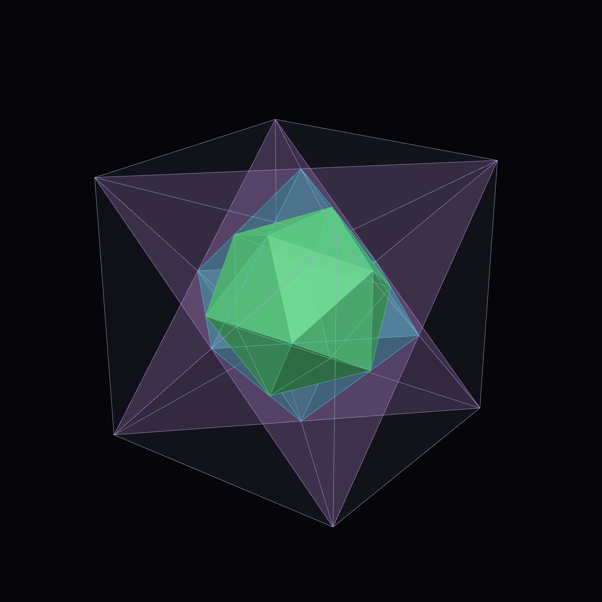
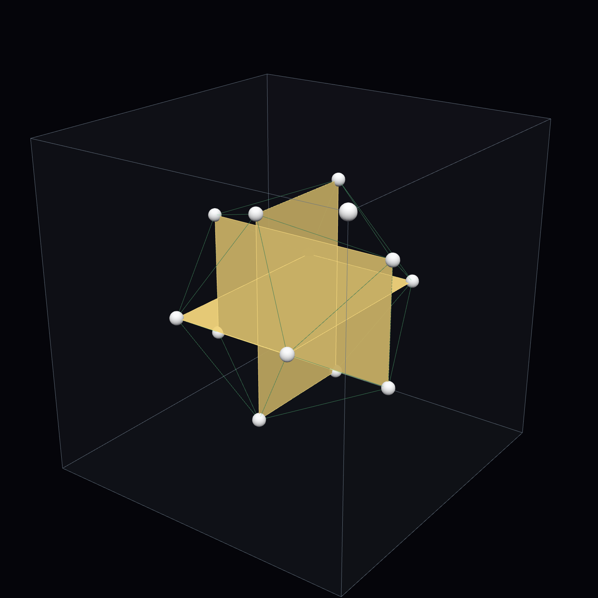
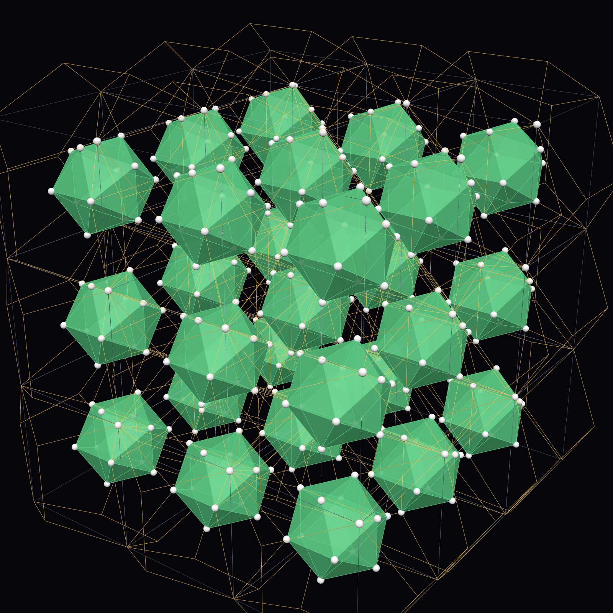
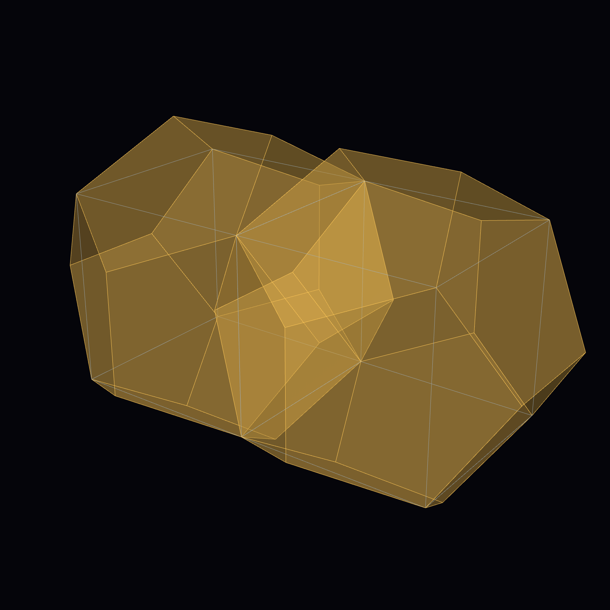
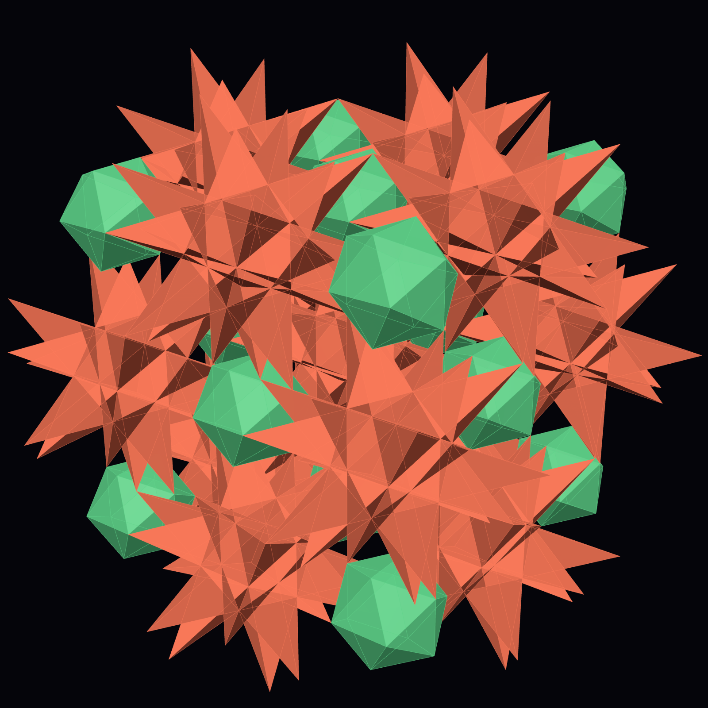

A periodic cell in which all five Platonic solids nest on 13 points, and a corner-sharing network of Kepler stars and icosahedra
Take the cube with corners (±1, ±1, ±1) and φ = (1+√5)/2. Euclid's roof construction (Elements XIII.17) adds over each face a roof whose ridge has length 2/φ and whose ridge vertices are the twelve points (0, ±1/φ, ±φ) and their cyclic permutations; with the cube's eight corners they are the 20 vertices of a regular dodecahedron of edge 2/φ. Reflecting each ridge vertex back through the cube face it stands on, (0, ±1/φ, ±φ) → (0, ±1/φ, ±(2−φ)) = (0, ±1/φ, ±1/φ²), gives twelve points that are the vertices of a regular icosahedron of edge 2/φ², centred in the cube. The cube is then repeated by translations of 2 along x, y and z (Fig. 4).
The reflection is the fold of the title: on every axis the coordinate is folded back at the cube face, so a roof vertex of one cell is an icosahedron vertex of the neighbouring cell. This is why the lattice has only 13 nodes per cell (one cube corner and the 12 icosahedron vertices) and why every dodecahedron vertex is already a node.



| Property | Value |
|---|---|
| Edges | cube 2, dodecahedron 2/φ, icosahedron 2/φ² (ratio φ² : φ : 1); every edge along one of the icosahedron's 15 two-fold axes |
| Nodes per cell | 13: one cube corner + 12 icosahedron vertices |
| Space group | Pm-3 (No. 200), symmorphic; 1b (cube corner) and 12j (0, y, z), y = 1/(2φ) ≈ 0.3090, z = 1/(2φ²) ≈ 0.1910 |
| Aligned axes | each cell's solids carry the icosahedron's 31 rotation axes (6 five-fold, 10 three-fold, 15 two-fold), parallel in every cell; 7 of them are axes of the crystal (3 two-fold, 4 three-fold). m-3 is exactly the set of cube symmetries that are also icosahedron symmetries. |
| Spikes | over each of the 20 icosahedron faces, exactly one node at distance 2/φ from its three corners; spike faces are golden triangles (apex 36°); the 20 tips are the dodecahedron's vertices |
| Great stellated dodecahedron | the icosahedron with its 20 spikes: 60 triangles in 12 planes forming 12 regular pentagrams, volume ≈ 2.918; its convex hull is the dodecahedron |
| Coverage by dodecahedra | not a tiling: space is covered once (19.1%) or twice (80.9%), mean (5+√5)/4 ≈ 1.809 = (10+2√5)/8 |
| Neighbours | face neighbours' dodecahedra overlap by exactly two roofs; edge neighbours touch only; corner neighbours share one vertex |
| Colourings | x+y+z parity → Fm-3 (No. 202); x+y → Cmmm (No. 65); z → Pmmm (No. 47); eight octants → Pmmm on a doubled cell |
Each roof ridge pokes into the neighbouring cell. Seen from inside that cell, the ridge is the long side (2/φ) of a golden rectangle whose short side (2/φ²) is an icosahedron edge. The six neighbours' ridges make, inside every cube, the three mutually perpendicular, interlocking golden rectangles of Pacioli's De divina proportione (1509), whose twelve corners are the icosahedron (Fig. 3). The fold is therefore literally the neighbours' roofs meeting in the middle of the cell. (Observation by DICTO, 2026-10-06: "four elements of roofing structure overlap, making golden section rectangles".)
The two regular tetrahedra on alternate cube corners (Kepler's stella octangula) intersect in the octahedron on the six cube-face centres. The twelve icosahedron vertices lie one on each of that octahedron's twelve edges, dividing it in the golden ratio, and eight of the icosahedron's faces lie in the octahedron's eight face planes. Hence one cell contains, exactly nested, icosahedron ⊂ octahedron ⊂ tetrahedra ⊂ cube ⊂ dodecahedron, with the great stellated dodecahedron between the icosahedron and the dodecahedron (Fig. 1–2). Each inclusion is classical; what is new here is that the whole chain is one periodic cell. The tetrahedra and octahedron edges lie along cube face diagonals (√2, 2√2), not along icosahedral axes, so a physical model needs a second family of rods.
The overlap belongs to the solids chosen, not to the points. From the same 13-node set:
(a) Dodecahedra on the even cells only (an FCC lattice) touch their twelve nearest neighbours and never overlap; the density is exactly (5+√5)/8 ≈ 0.9045. This is the known optimal lattice packing of the regular dodecahedron (Betke & Henk 2000; Torquato & Jiao 2009), recovered here inside the structure. Status: known.
(b) Great stellated dodecahedra on the even cells (touching tip to tip at shared cube corners) together with icosahedra on the odd cells share only corners: each star's twelve roof tips are vertices of the six neighbouring icosahedra, and an exact separating-axis test over 294 piece pairs finds no overlap (Fig. 6). This corner-sharing arrangement of Kepler stars and icosahedra is named the Euclid–Kepler–Pacioli network. Status: not found in a literature search; candidate.
Dodecahedra on the even cells with icosahedra on the odd cells do overlap; it is the stars that make (b) corner-sharing.



Classical: Euclid's roof construction of the dodecahedron on a cube; the pyritohedrally placed icosahedron in a cube; the stella octangula, the octahedron and the golden-section points on its edges; Pacioli's three golden rectangles; Kepler's great stellated dodecahedron. Periodic crystals with icosahedral or dodecahedral motifs are well known and are of the same symmetry kind (no five-fold crystal axis): α-AlMnSi (Pm-3, the 1/1 cubic approximant, Mackay icosahedra), skutterudites (Im-3, icosahedral cages on 24g (0, y, z)) and type-I clathrates (Pm-3n). The only packing study of great stellated dodecahedra found (de Graaf, van Roij & Dijkstra 2011) gives a two-orientation dimer lattice with interlocking spikes and no icosahedra, which differs from (b). Construction-kit and mathematical-art sources (Hart; Bridges archive) show single nested objects, not this periodic cell.
Not found (web-level search, 2026-10-06): the fold itself (roof vertices reflected through the cube faces giving the regular icosahedron, each landing on a neighbouring cell's icosahedron vertex), the φ² : φ : 1 cell as a 13-node Pm-3 structure, and the EKP network (b). Not yet checked: the full text of Koca et al. (2016), the closest paper found; structure databases (Bilbao, ICSD) for a 1b + 12j set with these parameters. Until those are checked, the cell and the network are candidates, and this record makes no claim of priority.
Included with this record: data/ekp-cell.json (the 13 node coordinates, every solid as face lists, the Wyckoff parameters and the network rule), data/checks.txt (48 tests, all passing, from scripts/verify-roof-fold.mjs in krp-core v0.14.0) and renders/ (the figures, drawn from the same data). The structure can be built and explored interactively in Kaleidohedra (https://kaleidohedra.dictospheres.com, 3D+ → EKP), part of DICTO's open-source apps (github.com/DICTOR-Master/kaleidohedra, concept DOI 10.5281/zenodo.23173809).
Named by DICTO on 2026-10-06. Euclid for the roofs on the cube (Elements XIII); Kepler for the great stellated dodecahedron, the stella octangula and his nested solids; Pacioli for the three golden rectangles the neighbouring roofs form. Short name: EKP.